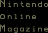
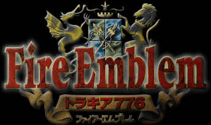

完成まで待てない!!『ファイアーエムブレム』シリーズ最新作・『トラキア７７６』
先取り？ 先走り？ インフォメーション

加賀昭三氏（『ファイアーエムブレム』シリーズゲームデザイナー）が語る、『トラキア７７６』への想い、プレイヤーへの想い 〜『トラキア７７６』製作秘話〜
さて、長年に渡って、ゲームファンからの根強い支持を得ている人気シリーズ『ファイアーエムブレム』の最新作が、まもなく完成します。その名も『トラキア７７６』。そこで第９号では、完成前から盛り上がっちゃおうと『ファイアーエムブレム』を特集することにしました。とくに！ シリーズの産みの親ともいえる、ゲームデザイナー加賀昭三氏のインタビューは必見。その言葉のはしばしから、シリーズへの想いや、まだ誰も知らない新作の世界を感じとってくださいね。
◆歴代「ファイアーエムブレム」
◆新作「トラキア７７６」
◆NOM独占インタビュー
back
▲ N.O.Mのバックナンバーページへ